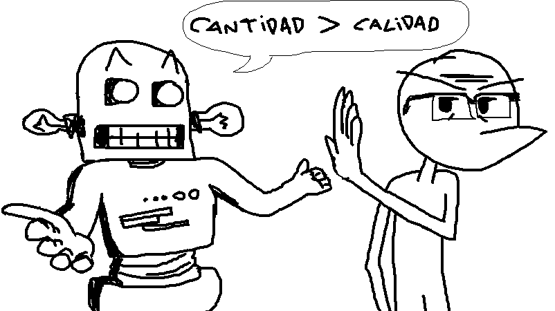

Año Desarrolladores que usan IA Creen que tiene impacto negativo 2024 31% 18% 2025 36% 30% 2026 36% 52% Los datos provienen de las encuestas anuales de GDC. En 2026, el 36% de los profesionales encuestados dijo utilizar IA generativa en su trabajo, mientras que 52% considera que está teniendo un impacto negativo en la industria. Esto da para un gráfico muy bueno: "La IA entra en los videojuegos, pero la opinión de los desarrolladores empeora" 📈 Uso de IA → 31% → 36% → 36% 📉 Opinión negativa → 18% → 30% → 52% Es probablemente mi opción favorita.
Un análisis de BCG encontró que la cantidad de juegos de Steam que declaraban uso de IA fue aumentando: Q1 2024: 6% Q2 2024: 10% Q3 2024: 12% Q4 2024: 14% Q1 2025: 16% Q2 2025: 18% Q3 2025: 21% Además, entre aproximadamente 7.300 juegos de Steam que declaraban uso de GenAI, el principal uso era: 88% — creación de assets/gráficos 18% — texto 16% — voces/sonido 15% — interfaz/UX 13% — marketing
36% de profesionales usan IA generativa. 52% creen que está perjudicando a la industria. 7% creen que tiene un impacto positivo. Es un contraste bastante potente porque rompe la idea de: "Si los desarrolladores la usan, entonces deben estar a favor." No necesariamente.